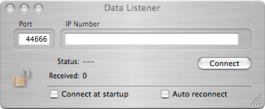

Listener


The Listener connects to a BSD socket object (the Data Broadcaster) on another comuter running ORCA and receives the raw data stream. The data stream is exactly the same as the data put on disk. If the Listener connects in the middle of a run it will receive the data header and all data put into the data stream after connecting. All previous data will not be received.
Options to connect listener at ORCA start-up and reconnect if connection is lost
The only setup for the dispatcher is to pick a port number and IP of the computer to connect to for data. It can also be configured to connect automatically at start-up and reconnect if the connection is lost.
Enter port and IP of ORCA computer will listen to